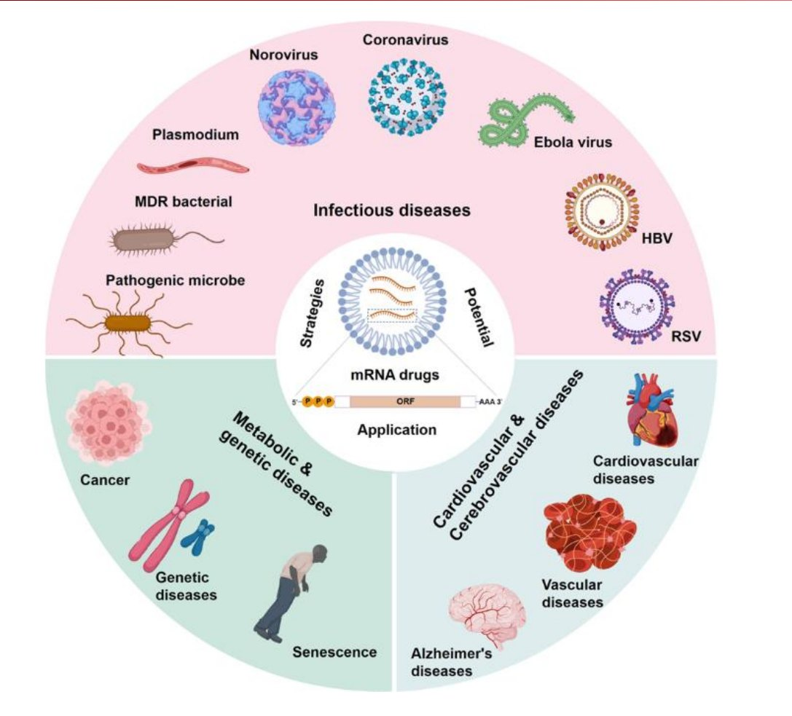
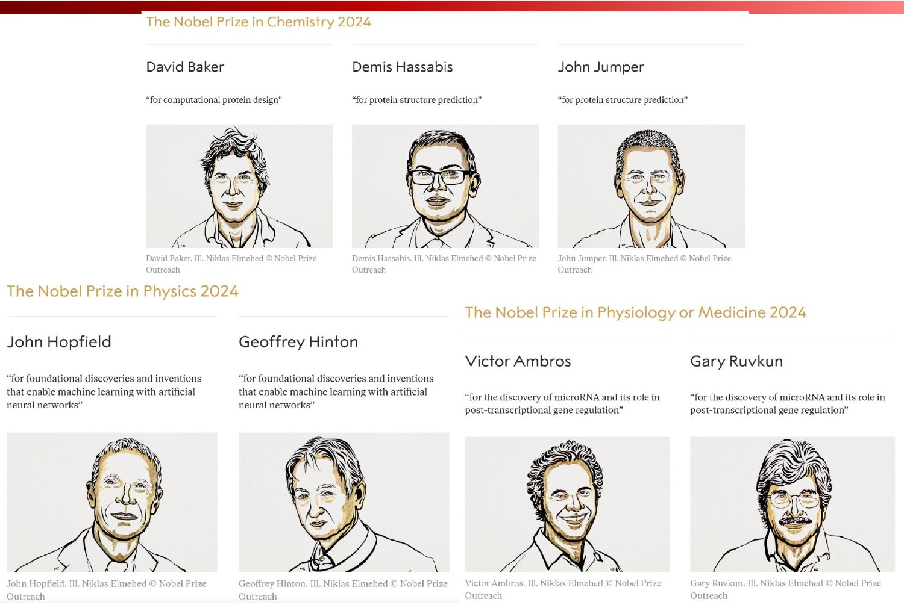
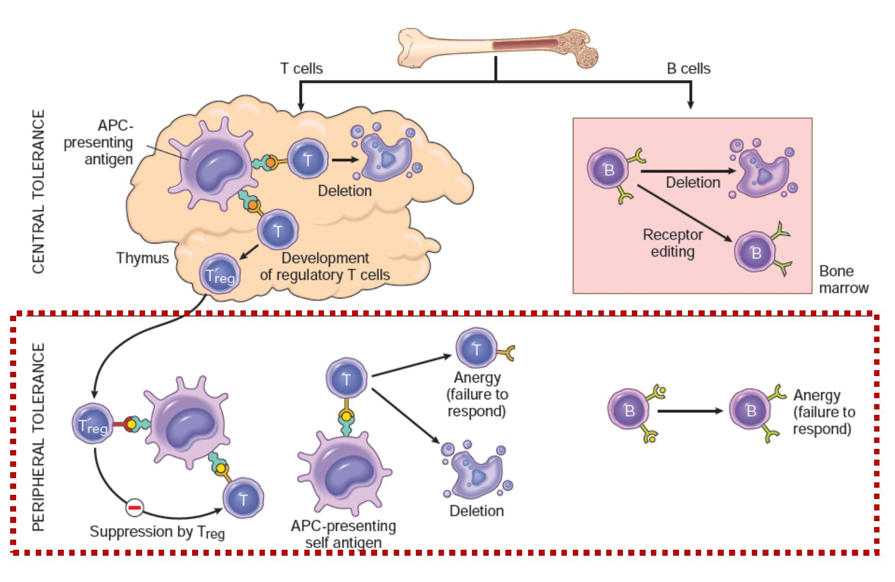

| 문항 | 정답 포인트 (교수님 해설) |
|---|---|
| 2024 노벨상 (변별력 문항) | 베이커·하사비스 = 화학상 (AI 단백질 구조 예측) 홉필드·힌턴 = 물리학상 (인공신경망 딥러닝) — 둘을 바꿔치기! |
| AlphaFold | “AlphaFold로 합성신약과 단백질 부착 사이트를 예측” ✗ → AlphaFold는 단백질 자체의 구조 예측이 주. 부착 사이트는 다른 AI |
| microRNA | 헤어핀 구조 → mRNA에 달라붙어 기능 억제 = 맞는 설명 |
| 저분자 | 항체 | 핵산 (mRNA 등) | |
|---|---|---|---|
| 작용 | 단백질 (효소·채널) | 단백질 (세포 밖·표면) | 유전 정보 (전사·번역) |
| 장점 | 생산 쉬움, 경구 | 친화도·특이성 ↑ | undruggable 표적 가능, 설계 빠름 |
| 단점 | 특이성↓, 표적 제한 | 고비용, 주사, 표적 제한 | 전달 시스템 필수 |

| 분야 | 수상자 | 업적 |
|---|---|---|
| 생리의학 | Victor Ambros · Gary Ruvkun | microRNA 발견과 전사 후 유전자 조절 |
| 화학 | David Baker | 컴퓨터 단백질 설계 (computational protein design) |
| Demis Hassabis · John Jumper | 단백질 구조 예측 (AlphaFold, DeepMind) | |
| 물리 | John Hopfield · Geoffrey Hinton | 인공신경망 머신러닝의 기초 |

| 중추 관용 | 말초 관용 ★ | |
|---|---|---|
| 장소 | 흉선(T) · 골수(B) | 림프절·조직 등 몸 전체 |
| 기전 | 제거 · 수용체 편집 · Treg 생성 | Treg 억제 · Anergy · 제거 |
| 비유 | 입학 시험 | 졸업 후 현장 감독 |
| 사이토카인 | 전사인자 | 세포 |
|---|---|---|
| IL-12 | T-bet | Th1 |
| IL-4 | Gata3 | Th2 |
| TGF-β + IL-6 | RORγt | Th17 (염증) |
| IL-2 + TGF-β | FOXP3 | Treg (억제) |

| 질환 | HLA | 교차비 |
|---|---|---|
| 강직성 척추염 | B*27 | 100~200 |
| 제1형 당뇨 (이형접합) | DRB1*0301/0401 | 35 |
| 류마티스 관절염 | DRB1 SE 2개 | 12 |
| 셀리악병 | DQA1*0501-DQB1*0201 | 7 |
| 방향 | 전략 | 응용 | 예 |
|---|---|---|---|
| 관용 ↑ (면역 억제) | Treg 증강 | 자가면역(1형 당뇨·루푸스), 이식 | Treg 세포치료, 저용량 IL-2 |
| Anergy 유도 | 자가면역, 이식 거부 | CTLA-4-Ig (아바타셉트·벨라타셉트) — CD28-B7 차단 | |
| 항원 특이적 관용 | 특정 자가면역, 알레르기 | 톨레로젠 · 역 백신 | |
| 관용 ↓ (면역 활성) | 면역관문 억제 | 암 (면역항암) | PD-1/PD-L1 · CTLA-4 저해제 (브레이크 해제) |
| # | 답 | 한 줄 해설 |
|---|---|---|
| 1 | X | 선천 경보만↓, 적응면역은 잘 일어남 |
| 2 | O | ~120배 |
| 3 | O | 테디베어 900파운드 |
| 4 | O | 발명자 ≠ 권리자 |
| 5 | O | BioNTech는 몇 시간 |
| 6 | X | 2024 물리학상 |
| 7 | O | Ambros·Ruvkun |
| 8 | O | 동물 = seed → 번역 억제 |
| 9 | O | 온파트로 |
| 10 | O | 아바타셉트 → anergy |
| 11 | X | 관용 ↓ → 항암 |
| 12 | O | “결함 있는 조절”의 대표 |